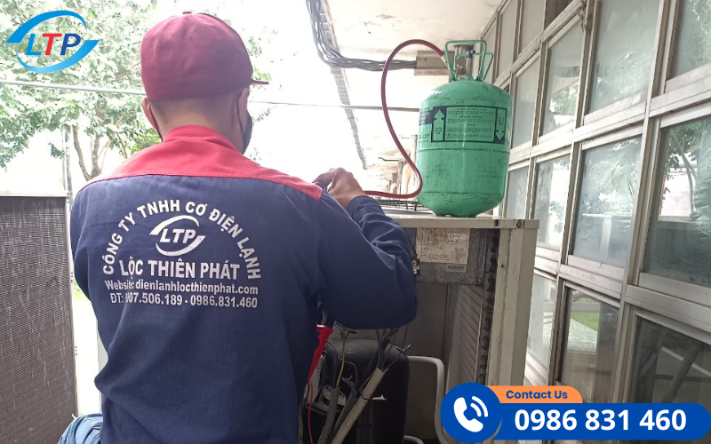

Gas máy lạnh đóng vai trò quan trọng trong việc duy trì hiệu suất và tuổi thọ của máy lạnh. Tuy nhiên, nhiều người dùng vẫn băn khoăn về việc liệu có cần bơm gas định kỳ không. Trong bài viết này, chúng tôi sẽ giúp bạn hiểu rõ hơn về gas máy lạnh, tầm quan trọng của việc bơm gas, và những lưu ý cần thiết để đảm bảo thiết bị hoạt động tốt nhất.
I.Tại Sao Việc Bơm Gas Máy Lạnh Lại Quan Trọng?
Khi nhắc đến việc duy trì hoạt động hiệu quả của máy lạnh, gas máy lạnh đóng vai trò không thể thay thế. Hiểu rõ về gas máy lạnh và lợi ích của việc duy trì mức gas tiêu chuẩn sẽ giúp bạn tận dụng tối đa hiệu suất và tuổi thọ của thiết bị.
1. Gas Máy Lạnh Là Gì?
Gas máy lạnh là thành phần quan trọng trong hệ thống làm lạnh, giúp vận chuyển nhiệt từ nơi có nhiệt độ thấp sang nơi có nhiệt độ cao, từ đó làm mát không khí trong phòng. Tuy nhiên, để máy lạnh hoạt động ổn định, mức gas cần luôn đạt tiêu chuẩn phù hợp.
Hiện nay, thị trường sử dụng phổ biến ba loại gas:
- Gas R22: Loại gas truyền thống, giá thành rẻ, dễ bảo trì, nhưng không thân thiện với môi trường do ảnh hưởng đến tầng ozone.
- Gas R410A: Nâng cao hiệu quả làm lạnh, tiết kiệm điện năng và thân thiện hơn với môi trường so với R22.
- Gas R32: Công nghệ tiên tiến nhất hiện nay, giúp giảm tới 75% khí thải, tiết kiệm năng lượng và dễ thay thế cho gas R410A.
Việc lựa chọn loại gas phù hợp không chỉ đảm bảo hiệu suất làm lạnh mà còn góp phần bảo vệ môi trường.
2. Lợi Ích Của Việc Duy Trì Mức Gas Đúng Tiêu Chuẩn
- Hiệu quả làm lạnh tối ưu: Khi gas được duy trì ở mức tiêu chuẩn, máy lạnh làm mát nhanh, giúp bạn tận hưởng không gian thoải mái ngay lập tức.
- Tiết kiệm năng lượng: Gas đầy đủ giúp giảm tải cho máy nén, từ đó tiết kiệm đáng kể điện năng tiêu thụ và giảm chi phí vận hành.
- Tăng tuổi thọ máy lạnh: Một hệ thống gas ổn định giúp hạn chế sự cố kỹ thuật và hao mòn linh kiện, kéo dài tuổi thọ máy lạnh của bạn.
Duy trì mức gas máy lạnh đúng chuẩn không chỉ đảm bảo hiệu quả sử dụng mà còn tiết kiệm chi phí và bảo vệ môi trường. Hãy kiểm tra và bơm gas định kỳ để máy lạnh của bạn luôn sẵn sàng cho những ngày hè oi bức!
Liên hệ ngay với CÔNG TY TNHH KỸ THUẬT ĐIỆN LẠNH HOÀNG GIA để được tư vấn và sử dụng dịch vụ bơm gas chuyên nghiệp. Chúng tôi cam kết mang lại giải pháp làm lạnh hiệu quả, bền vững cho không gian của bạn!

II.Có Cần Bơm Gas Máy Lạnh Định Kỳ Không?
Việc bơm gas định kỳ cho máy lạnh không chỉ giúp duy trì hiệu quả làm mát mà còn kéo dài tuổi thọ thiết bị và giảm chi phí sửa chữa không mong muốn. Nhưng làm thế nào để biết khi nào cần bơm gas? Hãy cùng tìm hiểu!
1. Thời Gian Và Tần Suất Bơm Gas Máy Lạnh
- Máy lạnh dân dụng: Sau khoảng 1-2 năm sử dụng, bạn nên kiểm tra và bơm gas để đảm bảo hiệu quả làm mát, đặc biệt nếu máy hoạt động liên tục trong mùa nắng nóng.
- Máy lạnh công nghiệp: Với cường độ hoạt động cao, máy lạnh công nghiệp cần được kiểm tra gas định kỳ mỗi 6 tháng, đảm bảo vận hành ổn định trong các không gian lớn như nhà máy, văn phòng, và trung tâm thương mại.
2. Dấu Hiệu Cần Bơm Gas Máy Lạnh
Những dấu hiệu sau đây là cảnh báo rõ ràng rằng máy lạnh của bạn có thể cần bơm gas:
- Hiệu suất làm mát giảm: Máy lạnh làm mát kém, không đạt được nhiệt độ mong muốn hoặc không lạnh dù đã chỉnh nhiệt độ thấp.
- Tiếng ồn hoặc mùi lạ: Máy lạnh phát ra tiếng ồn bất thường hoặc có mùi khó chịu khi hoạt động, điều này có thể liên quan đến sự thiếu hụt gas.
- Thời gian làm lạnh kéo dài: Nếu máy lạnh mất nhiều thời gian hơn bình thường để làm mát không gian, đó là dấu hiệu gas không còn đủ để hoạt động hiệu quả.
Lưu ý quan trọng: Việc bơm gas không chỉ phụ thuộc vào thời gian sử dụng mà còn vào môi trường lắp đặt và tần suất hoạt động của máy. Đừng để máy lạnh xuống cấp làm ảnh hưởng đến sự thoải mái của bạn!
III.Nguyên Nhân Dẫn Đến Thiếu Gas Máy Lạnh
Thiếu gas là một trong những nguyên nhân hàng đầu khiến máy lạnh hoạt động không hiệu quả. Hiểu rõ nguyên nhân gây ra tình trạng này sẽ giúp bạn chủ động bảo vệ thiết bị và tiết kiệm chi phí sửa chữa.
1. Rò Rỉ Gas Do Hư Hỏng Linh Kiện
- Ống dẫn gas bị hở hoặc rò rỉ: Tình trạng này thường xảy ra do va đập, gỉ sét, hoặc vật liệu kém chất lượng, làm thất thoát lượng gas đáng kể.
- Hỏng van xả hoặc khớp nối: Các chi tiết nhỏ nhưng quan trọng này khi bị hư hỏng sẽ dẫn đến hiện tượng rò rỉ gas mà bạn khó nhận ra nếu không kiểm tra thường xuyên.
2. Máy Lạnh Cũ, Sử Dụng Lâu Dài
- Lão hóa hệ thống: Sau một thời gian dài sử dụng, các bộ phận của máy lạnh sẽ bị hao mòn tự nhiên, dẫn đến hệ thống không còn kín khí, gây rò rỉ gas.
- Hiệu suất giảm: Những chiếc máy lạnh quá cũ thường tiêu hao nhiều gas hơn do các bộ phận không còn hoạt động đồng bộ như ban đầu.
3. Quá Trình Bảo Trì Không Đúng Cách
- Bỏ sót rò rỉ: Khi bảo trì không cẩn thận, kỹ thuật viên có thể không phát hiện kịp thời các vị trí bị rò rỉ gas, khiến tình trạng thiếu gas tiếp diễn mà không được xử lý triệt để.
- Sử dụng sai loại gas: Lựa chọn gas không phù hợp không chỉ làm giảm hiệu quả làm mát mà còn gây hại đến các linh kiện bên trong hệ thống.
IV.Quy Trình Bơm Gas Máy Lạnh Đúng Cách
Việc bơm gas máy lạnh không chỉ đơn thuần là bổ sung gas vào hệ thống, mà còn yêu cầu quy trình chính xác và tuân thủ kỹ thuật. Điều này đảm bảo máy lạnh hoạt động hiệu quả, an toàn và kéo dài tuổi thọ thiết bị.
1. Các Bước Chuẩn Bị Trước Khi Bơm Gas
- Kiểm tra tình trạng máy lạnh: Đầu tiên, kỹ thuật viên sẽ kiểm tra tổng thể máy lạnh, đặc biệt là hệ thống gas, để xác định mức gas còn lại và tìm hiểu nguyên nhân thiếu gas (nếu có).
- Xác định loại gas phù hợp: Mỗi dòng máy lạnh sử dụng một loại gas nhất định như R22, R410A, hoặc R32. Việc chọn đúng loại gas là yếu tố quan trọng để đảm bảo hiệu suất hoạt động và độ bền của thiết bị.
2. Quy Trình Bơm Gas Đúng Kỹ Thuật
- Xả khí dư: Nếu hệ thống có khí dư hoặc các tạp chất, chúng sẽ được xả ra hoàn toàn trước khi bơm gas mới, đảm bảo môi trường bên trong sạch sẽ.
- Bơm gas theo tiêu chuẩn: Gas sẽ được bổ sung đúng lượng theo thông số kỹ thuật của nhà sản xuất, tránh tình trạng thừa hoặc thiếu gas.
- Kiểm tra áp suất: Sau khi bơm gas, kỹ thuật viên sẽ kiểm tra áp suất hệ thống để đảm bảo gas đã được nạp đủ và hệ thống hoạt động ổn định.
3. Lưu Ý Quan Trọng Khi Bơm Gas Máy Lạnh
- Không bơm gas quá mức: Việc nạp gas vượt quá tiêu chuẩn có thể gây áp lực lên hệ thống, dẫn đến hỏng hóc và giảm tuổi thọ máy lạnh.
- Chỉ thực hiện bởi kỹ thuật viên chuyên nghiệp: Bơm gas là một thao tác kỹ thuật cao, đòi hỏi sự am hiểu và tay nghề. Việc tự ý thực hiện có thể gây nguy hiểm và làm hỏng thiết bị.
.png)
Sửa chữa máy lạnh
V.Lợi Ích Khi Bơm Gas Máy Lạnh Định Kỳ
Bơm gas máy lạnh định kỳ không chỉ là biện pháp bảo dưỡng cần thiết mà còn mang lại nhiều lợi ích thiết thực cho cả hiệu suất thiết bị và trải nghiệm sử dụng. Dưới đây là những lý do bạn không nên bỏ qua công việc quan trọng này:
1. Tiết Kiệm Năng Lượng Và Chi Phí Điện
Khi lượng gas trong máy lạnh đạt mức tiêu chuẩn, thiết bị sẽ hoạt động trơn tru và hiệu quả hơn. Điều này giúp làm mát nhanh hơn, giảm thiểu thời gian máy phải vận hành ở công suất cao, từ đó tiết kiệm đáng kể hóa đơn điện hàng tháng.
2. Tăng Tuổi Thọ Thiết Bị
Máy lạnh thiếu gas dễ gặp các vấn đề nghiêm trọng như nóng máy, đóng băng dàn lạnh hoặc hỏng lốc máy. Bơm gas định kỳ giúp hệ thống luôn trong trạng thái ổn định, giảm nguy cơ hỏng hóc, kéo dài tuổi thọ của thiết bị, và tiết kiệm chi phí sửa chữa.
3. Cải Thiện Chất Lượng Không Khí
Khi máy lạnh hoạt động hiệu quả, không chỉ nhiệt độ phòng được duy trì ổn định mà hệ thống còn có khả năng lọc sạch bụi bẩn, vi khuẩn, mang lại không khí trong lành, mát mẻ hơn cho không gian sống và làm việc.
Xem thêm :Có Nên Tự Vệ Sinh Máy Lạnh? Những Điều Cần Biết Để Giữ Máy Lạnh Luôn Hoạt Động Hiệu Quả
Bật Máy Lạnh Khi Ngủ Vào Ban Đêm: Bí Quyết Giấc Ngủ Ngon Và Sức Khỏe An Toàn
VI.Những Sai Lầm Cần Tránh Khi Bơm Gas Máy Lạnh
Bơm gas máy lạnh là một công việc đòi hỏi kỹ thuật và sự cẩn thận. Tuy nhiên, nhiều người vẫn mắc phải những sai lầm phổ biến, không chỉ gây ảnh hưởng đến hiệu quả làm mát mà còn làm giảm tuổi thọ của thiết bị. Dưới đây là hai sai lầm lớn cần tránh:
1. Tự Ý Bơm Gas Khi Không Có Chuyên Môn
Nhiều người nghĩ rằng việc bơm gas máy lạnh chỉ cần mua gas và thực hiện tại nhà. Tuy nhiên, nếu không có kiến thức và kỹ năng cần thiết, bạn có thể gây ra các vấn đề nghiêm trọng như:
- Gây nguy hiểm: Việc thao tác sai cách có thể dẫn đến rò rỉ khí gas, gây nguy cơ cháy nổ hoặc ảnh hưởng đến sức khỏe.
- Làm hỏng hệ thống: Bơm sai loại gas hoặc bơm quá mức có thể khiến máy lạnh hoạt động không ổn định, thậm chí hỏng hóc.
Hãy nhớ rằng công việc này cần được thực hiện bởi kỹ thuật viên chuyên nghiệp để đảm bảo an toàn và hiệu quả.
2. Bơm Gas Mà Không Kiểm Tra Rò Rỉ
Một sai lầm phổ biến khác là bơm gas mà không kiểm tra kỹ tình trạng rò rỉ trên hệ thống. Hậu quả là:
- Gas nhanh chóng hao hụt: Các điểm rò rỉ sẽ khiến gas thoát ra ngoài chỉ sau một thời gian ngắn, làm máy lạnh không hoạt động như mong đợi.
- Lãng phí chi phí: Bạn sẽ phải bơm gas nhiều lần mà không khắc phục được vấn đề triệt để, gây tốn kém và phiền toái.
Trước khi bơm gas, cần kiểm tra và khắc phục triệt để các vị trí rò rỉ để đảm bảo hiệu suất máy lạnh lâu dài.
Giải Pháp Tốt Nhất - Dịch Vụ Chuyên Nghiệp
Để tránh những rủi ro không đáng có, hãy chọn CÔNG TY TNHH KỸ THUẬT ĐIỆN LẠNH HOÀNG GIA với đội ngũ kỹ thuật viên giàu kinh nghiệm. Chúng tôi không chỉ cung cấp dịch vụ bơm gas đúng chuẩn mà còn kiểm tra toàn diện hệ thống, giúp bạn tiết kiệm chi phí và bảo vệ thiết bị tốt nhất.

Kỷ thuật bơm gas máy lạnh
Liên hệ ngay hôm nay để nhận tư vấn và báo giá chi tiết!
VII.Dịch Vụ Bơm Gas Máy Lạnh Chuyên Nghiệp Tại Hoàng Gia Điện Lạnh
Nếu bạn đang tìm kiếm một dịch vụ bơm gas máy lạnh uy tín, chuyên nghiệp và nhanh chóng, CÔNG TY TNHH KỸ THUẬT ĐIỆN LẠNH HOÀNG GIA chính là lựa chọn hàng đầu. Chúng tôi cam kết mang đến giải pháp tối ưu nhất để máy lạnh của bạn hoạt động hiệu quả và bền bỉ.
1. Tại Sao Nên Chọn Hoàng Gia Điện Lạnh?
-
Đội ngũ kỹ thuật viên chuyên nghiệp:
Được đào tạo bài bản, giàu kinh nghiệm trong việc xử lý mọi loại máy lạnh, từ dân dụng đến công nghiệp. -
Quy trình bơm gas chuẩn kỹ thuật:
Áp dụng tiêu chuẩn an toàn cao nhất, đảm bảo máy lạnh hoạt động ổn định, tiết kiệm năng lượng và kéo dài tuổi thọ. -
Phục vụ tận tâm, nhanh chóng:
Chúng tôi luôn sẵn sàng hỗ trợ khách hàng tại Đồng Nai và các khu vực lân cận như TP.HCM, Bình Dương, Long An trong thời gian sớm nhất.
2. Cách Đặt Lịch Dịch Vụ Nhanh Chóng
Việc liên hệ với Hoàng Gia Điện Lạnh chưa bao giờ dễ dàng hơn:
- Hotline tư vấn trực tiếp: +84.918.092.848 - Đội ngũ hỗ trợ luôn sẵn sàng 24/7.
- Đặt lịch trực tuyến: Chỉ cần vài bước đơn giản tại website: www.sanpham
- Đảm bảo thời gian phục vụ: Có mặt trong vòng 24h kể từ khi nhận yêu cầu, giúp bạn tiết kiệm thời gian và đảm bảo sự tiện lợi.
3. Bảng Giá Bơm Gas Máy Lạnh
Hoàng Gia Điện Lạnh cung cấp dịch vụ với mức giá cạnh tranh và minh bạch:
- Gas R22: Chỉ 6.000 VND/Psi, phù hợp với các dòng máy lạnh thông dụng.
- Gas R410A: Giá 10.000 VND/Psi, tiết kiệm năng lượng và thân thiện với môi trường.
- Gas R32: Chỉ 8.000 VND/Psi, tối ưu hiệu suất và giảm thiểu khí thải.
VIII.Câu Hỏi Thường Gặp Về Bơm Gas Máy Lạnh
Bạn đang gặp vấn đề với máy lạnh và cần giải đáp? Dưới đây là những câu hỏi phổ biến nhất mà khách hàng thường thắc mắc khi sử dụng dịch vụ bơm gas máy lạnh tại Hoàng Gia Điện Lạnh.
1. Tại sao máy lạnh của tôi vẫn không lạnh dù đã bơm gas?
Có thể nguyên nhân không chỉ do thiếu gas. Các vấn đề như:
- Lưới lọc bụi bẩn: Bụi bám nhiều gây cản trở luồng khí lạnh.
- Hỏng quạt dàn lạnh hoặc dàn nóng: Khiến hệ thống không lưu thông không khí đúng cách.
-
Rò rỉ gas:
Nếu không kiểm tra kỹ trước khi bơm, gas có thể
tiếp tục rò rỉ ra ngoài.
Hãy để đội ngũ kỹ thuật của chúng tôi kiểm tra toàn diện để xác định và xử lý triệt để.
2. Bơm gas quá nhiều có gây hại cho máy lạnh không?
Có! Việc bơm gas quá mức tiêu chuẩn có thể:
- Gây áp lực cao trong hệ thống: Dẫn đến hỏng hóc nghiêm trọng.
-
Làm giảm tuổi thọ máy lạnh:
Gây tốn kém chi phí sửa chữa sau này.
Chỉ nên bơm đúng lượng gas theo hướng dẫn của nhà sản xuất để đảm bảo máy hoạt động hiệu quả và an toàn.
3. Tôi có thể tự bơm gas cho máy lạnh được không?
Không khuyến khích! Bơm gas đòi hỏi:
- Kiến thức chuyên môn: Hiểu rõ loại gas phù hợp và cách đo áp suất chính xác.
-
Dụng cụ chuyên dụng:
Thiếu thiết bị đo lường hoặc bơm sai cách có thể
làm hỏng hệ thống.
Để đảm bảo an toàn và hiệu quả, hãy gọi đội ngũ kỹ thuật viên chuyên nghiệp của Hoàng Gia Điện Lạnh.
4. Bơm gas máy lạnh như thế nào là đủ?
Một quy trình bơm gas chuẩn kỹ thuật bao gồm:
- Kiểm tra áp suất: Đảm bảo lượng gas đúng tiêu chuẩn của nhà sản xuất.
- Kiểm tra hiệu suất làm lạnh: Xác nhận máy lạnh đạt độ lạnh mong muốn sau khi bơm.
- Đảm bảo không rò rỉ: Kỹ thuật viên sẽ kiểm tra toàn bộ hệ thống để đảm bảo gas không thất thoát.
Hãy liên hệ ngay với Hoàng Gia Điện Lạnh để được giải đáp mọi thắc mắc và trải nghiệm dịch vụ bơm gas máy lạnh chuyên nghiệp, an toàn và hiệu quả!
Bơm gas máy lạnh định kỳ là yếu tố quan trọng giúp duy trì hiệu suất làm lạnh tối ưu, tiết kiệm năng lượng và kéo dài tuổi thọ của thiết bị. Đừng để máy lạnh của bạn hoạt động kém hiệu quả và gây lãng phí chi phí vận hành vì thiếu gas.
Liên hệ ngay với CÔNG TY TNHH KỸ THUẬT ĐIỆN LẠNH HOÀNG GIA để trải nghiệm dịch vụ bơm gas máy lạnh chuyên nghiệp. Chúng tôi cam kết mang đến giải pháp nhanh chóng, tiết kiệm, và an toàn, đảm bảo máy lạnh của bạn luôn hoạt động ổn định và bền bỉ.
Hãy liên hệ ngay hôm nay qua hotline +84.918.092.848 hoặc đặt lịch trực tuyến tại www.sanpham. Chúng tôi luôn sẵn sàng phục vụ bạn tại Đồng Nai và các tỉnh lân cận!


.png)


.png)